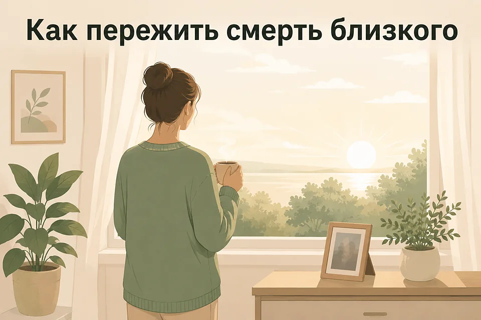
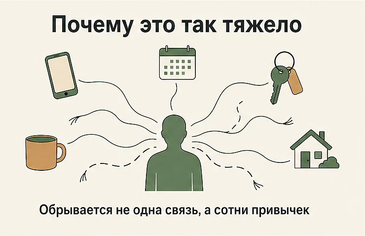
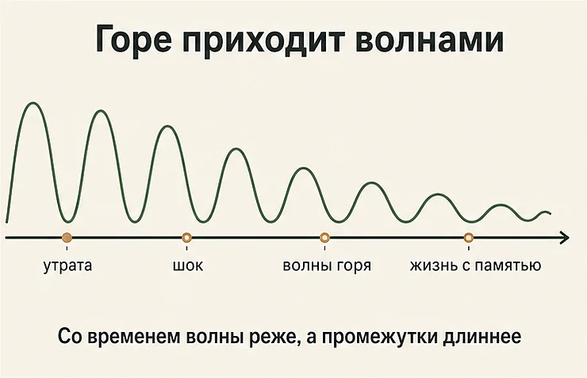
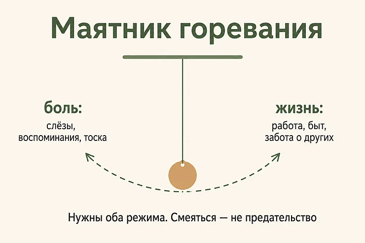
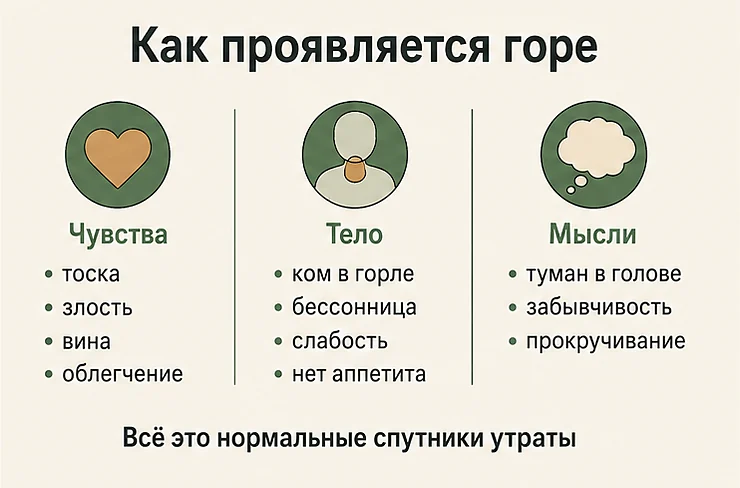
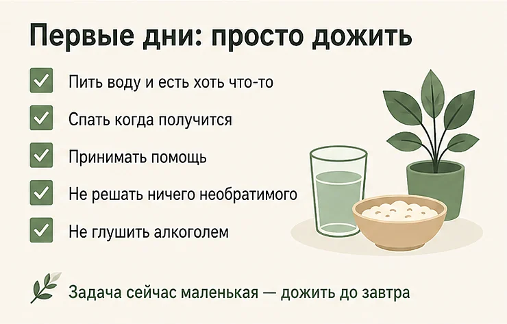
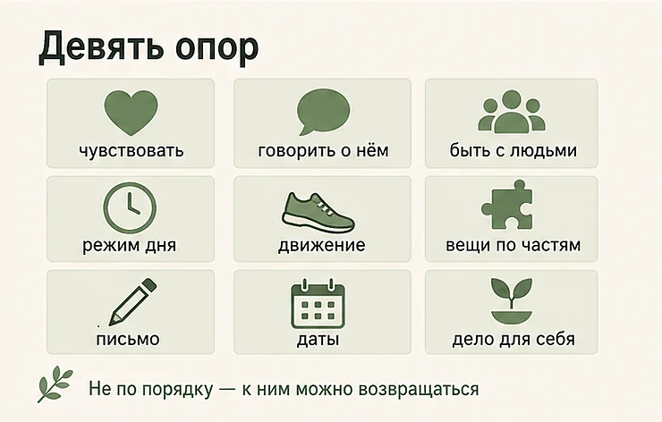
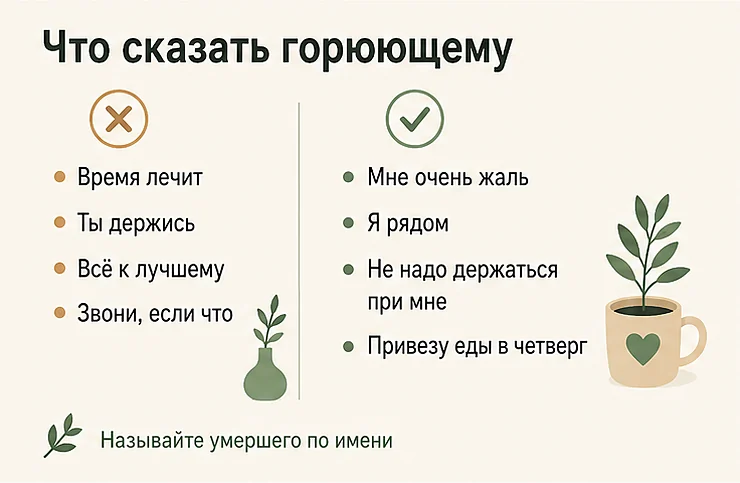
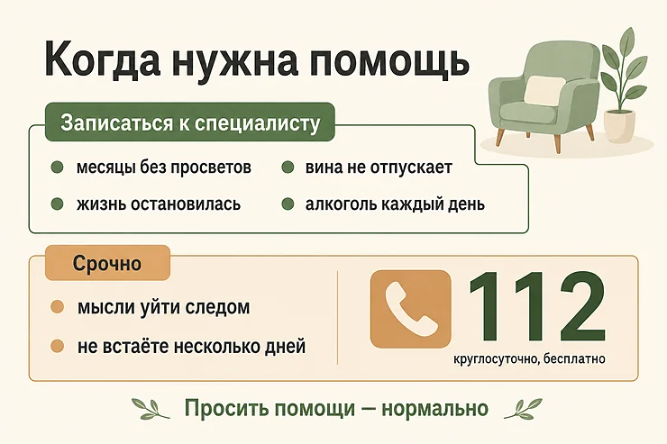

Главная → Блог → Как пережить смерть близкого
Как пережить смерть близкого человека: 9 шагов, которые помогают
Обновлено: 02.08.2026 · 21 минута чтения

Пережить смерть близкого — не значит перестать горевать или «отпустить» человека. Это значит постепенно вернуть себе способность жить дальше, сохранив умершего внутри: в памяти, в привычках, в том, каким он вас сделал. Горе — не болезнь и не сбой, а нормальная реакция психики на потерю того, кто был частью вашей жизни. Оно не идёт по расписанию, накатывает волнами и не требует, чтобы вы чувствовали «правильные» вещи.
Эта статья — о том, как жить после смерти близкого человека: мамы или папы, мужа или жены, ребёнка, брата или сестры, бабушки или дедушки, друга. Ниже — сколько обычно длится горе и когда станет легче, что делать в первые дни, как справиться с болью и чувством вины, что говорить горюющему и в какой момент нужна помощь специалиста.
- Что такое горе и почему оно бьёт так сильно
- Сколько длится горе и когда станет легче
- Этапы горевания: почему они не идут по порядку
- Как горе проявляется: чувства, тело, мышление
- Первые дни и недели: что делать, когда всё рухнуло
- Как пережить смерть близкого: 9 шагов
- Чувство вины: «я мог что-то сделать»
- Особые случаи: кого вы потеряли и как это меняет горе
- Почему после смерти близкого не хочется жить
- Что говорить горюющему и чего не говорить
- Что не помогает и что затягивает горе
- Осложнённое горе: когда оно застревает
- Когда обращаться к специалисту
- Частые вопросы
Что такое горе и почему оно бьёт так сильно
Горе — это естественная реакция на утрату значимого человека, которая затрагивает сразу всё: эмоции, тело, мышление, привычки и представление о будущем. Это не расстройство, которое надо лечить, а процесс, который надо прожить.
Сила удара объясняется просто: близкий человек был не только источником тепла, но и частью вашей повседневной структуры. С ним были связаны сотни автоматических действий — кому позвонить по дороге домой, с кем обсудить новость, кто ждёт вас вечером. Смерть обрывает не одну связь, а всю сеть сразу, поэтому и ощущается как разрушение мира, а не как одно печальное событие.
Отсюда же и странные на первый взгляд вещи: вы тянетесь к телефону, чтобы позвонить, забываете на секунду, что человека нет, слышите его шаги в квартире. Это не признак того, что вы сходите с ума. Это мозг, у которого ещё не переписаны сотни привычек.

Сколько длится горе и когда станет легче
Установленного срока не существует. Ни сорок дней, ни год, ни любой другой рубеж не являются медицинской нормой — это культурные традиции, которые задают форму прощания, но ничего не говорят о том, что должно происходить у вас внутри.
Что известно про типичное течение: у большинства людей самая острая фаза приходится на первые недели и месяцы. Дальше боль не исчезает, а меняет характер — становится реже и приступообразнее. Именно поэтому горе часто описывают как волны: вы стоите по колено в воде и справляетесь, а потом накатывает волна и сбивает с ног. Со временем волны приходят реже, а промежутки между ними становятся длиннее и спокойнее.
Важен не календарь, а направление движения. Нормально, что через полгода вам всё ещё больно. Ненормально, если за многие месяцы не появилось вообще никаких просветов и жизнь по-прежнему полностью остановлена.
Горе не проходит. Оно меняет форму — и вместе с ним меняетесь вы.

Этапы горевания: почему они не идут по порядку
Знаменитые пять стадий — отрицание, гнев, торг, депрессия, принятие — придумала Элизабет Кюблер-Росс, и описывала она изначально не горюющих, а умирающих людей. Позже модель начали применять к утрате, и она разошлась по всему миру, потому что удобна и понятна.
Проблема в том, что как инструкция она не работает. Стадии не идут по порядку, могут повторяться, идти одновременно или отсутствовать вовсе — на это прямо указывают и современные руководства для пациентов. Вреда от буквального понимания больше, чем пользы: человек начинает проверять себя по списку и делать выводы, что горюет неправильно.
Ближе к реальности другая модель — маятника. В ней у горюющего есть два режима, и здоровое проживание утраты — это раскачивание между ними:
| Режим | Что происходит | Зачем нужен |
|---|---|---|
| Обращённый к утрате | Плач, воспоминания, разбор вещей, тоска, разговоры об умершем | Позволяет пережить боль, а не законсервировать её |
| Обращённый к жизни | Работа, быт, забота о детях, отвлечение, даже смех | Даёт передышку и не даёт горю поглотить всё |
Оба режима нужны. Застревание в первом изматывает, застревание во втором откладывает горе на потом — и оно всё равно догонит, часто через год-два и в неожиданной форме. Если вы посреди слёз вдруг засмеялись над старой шуткой — это не предательство, это работающий маятник.

Как горе проявляется: чувства, тело, мышление
Горе — это не только грусть. Люди часто пугаются собственных реакций и думают, что с ними что-то не так, поэтому важно знать весь диапазон.
Чувства
Оцепенение и нереальность происходящего в первые дни. Тоска и волны острой боли. Злость — на врачей, на обстоятельства, на самого умершего за то, что ушёл. Вина. Страх за других близких и за себя. Облегчение, если человек долго болел. Стыд за облегчение. Всё это может идти одновременно и противоречить друг другу.
Тело
Горе почти всегда телесное: тяжесть или ком в груди, сдавленность в горле, слабость, бессонница или, наоборот, постоянная сонливость, потеря аппетита или переедание, головные и мышечные боли, снижение иммунитета и частые простуды. Многие пугаются сердцебиения и нехватки воздуха и вызывают скорую — и это разумно, проверить сердце стоит, но чаще причина в самом горе.
Мышление
Рассеянность, забывчивость, невозможность сосредоточиться на простом тексте, ощущение «тумана в голове». Навязчивое прокручивание последних дней и разговоров. Если голова бесконечно крутит одни и те же сцены и разговоры, может пригодиться разбор в статье про навязчивые мысли.

Многие после утраты впервые сталкиваются с сильной тревогой за оставшихся близких, страхом за собственное здоровье и даже паническими атаками — смерть перестаёт быть чем-то абстрактным. Если это про вас, посмотрите техники работы с тревогой и разбор панических атак.
Первые дни и недели: что делать, когда всё рухнуло
В первые дни не стоит ставить себе задачу «пережить утрату». Задача другая, и она гораздо меньше: дожить до следующего дня и не навредить себе. Всё остальное подождёт.
- Пейте воду и ешьте хоть что-то, даже без аппетита и по чуть-чуть. Обезвоживание и голод усиливают тревогу и туман в голове.
- Спите когда получится, в том числе днём. Ночной сон в первые недели часто разрушен, и это ожидаемо.
- Принимайте конкретную помощь. Когда спрашивают «чем помочь», отвечайте прямо: привезти еды, посидеть с детьми, съездить в морг, обзвонить родственников.
- Делегируйте документы и организацию, если можете. Это огромный объём дел в худшем для этого состоянии.
- Не принимайте необратимых решений: не увольняйтесь, не переезжайте, не раздавайте и не выбрасывайте вещи умершего в первые недели.
- Уберите из доступа алкоголь как способ уснуть. Он крадёт вторую половину ночи и утяжеляет следующий день.
- Предупредите на работе. Формулировка «у меня умер близкий человек, мне нужно время» ничего больше объяснять не обязывает.

Отдельно про похороны и ритуалы. Они бывают невыносимы, но у них есть функция: ритуал даёт форму тому, что не помещается в слова, и обозначает факт смерти для психики. Если вы не смогли попрощаться — были далеко, не пустили в реанимацию, тело не отдали — эту потребность стоит закрыть позже своим способом: съездить на место, написать письмо, провести собственное прощание.
Когда говорить с близкими невозможно, а держать в себе больше нельзя — иногда помогает просто выговориться в спокойном месте, где никто не оценивает и не торопит.
Поговорить с ИИ-психологом бесплатноКак пережить смерть близкого: 9 шагов
Это не расписание и не последовательность — скорее опоры, к которым можно возвращаться в любом порядке.
- Разрешите себе чувствовать то, что чувствуете. Злость на умершего, облегчение, зависть к тем, у кого все живы, — всё это встречается сплошь и рядом. Чувства не бывают неправильными, а их подавление удлиняет горе.
- Говорите об умершем и называйте его по имени. Одна из самых больших болей горюющих — что человека будто вычеркнули: окружающие боятся упоминать его, чтобы «не расстраивать». Рассказывайте истории, смотрите фотографии, вспоминайте смешное.
- Не оставайтесь в полной изоляции. Не обязательно много общаться — достаточно, чтобы рядом кто-то был. Если сил на разговоры нет, скажите об этом прямо: «побудь рядом молча».
- Держите минимальный каркас дня. Подъём примерно в одно время, еда, душ, короткая прогулка. При горе структура работает как перила: она не убирает боль, но не даёт скатиться в круглосуточное лежание.
- Двигайтесь хоть немного. Пятнадцать минут ходьбы на воздухе снижают уровень напряжения и помогают телу переработать то, что не проговаривается словами.
- Дозируйте дела, связанные с умершим. Разбор вещей, документы, наследство — тяжёлая работа. Делайте порциями и не в одиночку, а если пока не можете — отложите, это не срочно.
- Пишите. Письмо умершему — простая и неожиданно сильная практика: сказать то, что не успели, попросить прощения, поблагодарить, поругаться. Никто это не прочитает, задача только в том, чтобы вынести из головы наружу.
- Готовьтесь к датам заранее. Годовщина, день рождения, праздники. Решите заранее, где и с кем будете, и что сделаете в память о человеке — так дата становится вашей, а не сваливается сверху.
- Возвращайте по одному делу «для себя». Не когда станет легче, а чуть раньше, чем захочется. Способность к удовольствию возвращается через действие, а не наоборот.

Чувство вины: «я мог что-то сделать»
Вина — почти обязательный спутник утраты, и она принимает много форм: не настоял на обследовании, не приехал, поссорились накануне, не успел сказать главное, отпустил одного, выжил сам. Отдельная её разновидность — вина за то, что живёшь дальше: за первый смех, за вкусный ужин, за то, что однажды поймал себя на хорошем дне.
Почему она возникает даже там, где вины объективно нет? Потому что вина сохраняет иллюзию контроля. Признать, что смерть близкого была вам неподвластна, страшнее, чем считать себя виноватым: виноватый мог бы всё изменить, а бессильный — нет. Психика выбирает вину как менее невыносимый вариант.
Что с этим делать практически:
- Разделяйте, что вы знали тогда, и что знаете сейчас. Задним числом видны все знаки, но решения вы принимали без этого знания.
- Проверяйте мысль на фактах: действительно ли исход зависел от вас — и был ли у вас в тот момент выбор, ресурс и информация.
- Спросите себя, что бы вы сказали другу в такой же ситуации. К себе мы почти всегда жёстче, чем к другим.
- Разделите вину и ответственность. Если что-то действительно было в вашей власти и вы это упустили, помогает не самонаказание, а конкретное действие в память о человеке.
Если вина не сдвигается месяцами, перерастает в убеждение «я не заслуживаю жить» или сопровождается мыслями о смерти — это уже повод к специалисту, а не тема для самостоятельной работы.
Особые случаи: кого вы потеряли и как это меняет горе
Горе устроено похоже, но у каждой утраты своя специфика — и то, что мучает больше всего, у всех разное.
Как пережить смерть мамы или папы
Смерть родителя часто становится первой по-настоящему близкой утратой во взрослой жизни. Кроме тоски она приносит специфическое чувство: между вами и смертью больше нет поколения, вы теперь «первый в очереди». Многие описывают ощущение, что перестали быть чьим-то ребёнком, даже если им сорок или шестьдесят лет. Отдельно бьёт потеря того, кто помнил вас маленьким: вместе с человеком уходит часть вашей собственной истории, которую больше не с кем разделить.
Как пережить смерть мужа или жены
Потеря супруга ломает не только эмоциональную связь, но и всю конструкцию быта: с кем советоваться, кто ждёт вечером, как теперь одному тянуть детей, дом и деньги. К горю добавляется полная перестройка повседневности и часто — резкое одиночество, потому что общие друзья постепенно исчезают, а социальный круг был общим. Здесь особенно важно не оставаться в изоляции: вечера и выходные становятся самым тяжёлым временем.
Как пережить смерть ребёнка
Это утрата, которая переживается тяжелее всех остальных, и здесь честнее всего сказать прямо: универсальных слов не существует, а фразы вроде «у вас будут ещё дети» ранят. Такое горе идёт против всякого порядка вещей и обычно длится дольше. Родители часто горюют по-разному, и это становится отдельным испытанием для пары: один хочет говорить, другой замыкается, и каждый воспринимает реакцию второго как равнодушие. Знать об этом заранее — уже помощь. При такой утрате поддержка специалиста и групп для родителей нужна не «если не справитесь», а по умолчанию.
Смерть брата, сестры, бабушки или дедушки, друга
У этих утрат есть общая беда: окружающие часто считают их «менее значимыми» и быстро ждут возвращения в строй. Между тем брат или сестра — человек, знавший вас дольше всех на свете, бабушка могла быть ближе родителей, а друг — тем единственным, кому вы рассказывали всё. Не позволяйте чужой иерархии решать, сколько вам горевать.
Внезапная смерть
Авария, инфаркт, несчастный случай — когда не было ни болезни, ни прощания. Такая утрата переживается тяжелее: нет времени на подготовку, психика получает удар без предупреждения, а к горю добавляется травматический компонент — навязчивые образы, кошмары, вздрагивания. Если картинки происшедшего возвращаются против вашей воли и не ослабевают, это повод к специалисту раньше, чем в других случаях.
Смерть после долгой болезни
Здесь часто присутствует так называемое предвосхищающее горе: человек начинает горевать ещё при жизни близкого. После смерти на первый план нередко выходит облегчение — и вслед за ним стыд. Скажем прямо: облегчение после многих месяцев ухода, боли и бессонных ночей — нормально и не отменяет любви.
Когда отношения были плохими
Смерть родителя, с которым были конфликты, обиды или разрыв, переживается не легче, а зачастую тяжелее. Вместе с человеком умирает надежда, что однажды он поймёт, извинится, признает вашу правоту. Горевать приходится не только по нему, но и по несостоявшимся отношениям. Если утрата связана с человеком, отношения с которым были разрушительными, может быть полезен разбор в статье про токсичные отношения.
Как говорить с ребёнком
Дети переживают горе иначе: короткими вспышками, вперемешку с играми, и это не бесчувственность. Главное правило — говорить правду простыми словами и не использовать метафоры «уснул» и «ушёл»: маленькие дети понимают их буквально и начинают бояться сна или ждать возвращения. Скажите, что смерть необратима и что в ней нет вины ребёнка, разрешите любые вопросы, покажите, что взрослым тоже грустно, и сохраните привычный распорядок дня.
Смерть питомца
Обесценивать эту утрату не стоит: для многих животное было ежедневным источником тепла и рутины, а окружающие часто реагируют в духе «заведи нового». Горе здесь устроено так же, и все опоры выше работают.
Почему после смерти близкого не хочется жить
Мысли «зачем всё это», «я тоже хочу туда», «лучше бы вместо него ушёл я» после утраты возникают у очень многих. Важно понимать, что чаще всего за ними стоит не желание умереть, а желание прекратить невыносимую боль и снова оказаться рядом с человеком. Это разные вещи, хотя изнутри они ощущаются одинаково.
Такие мысли — сигнал, что нагрузка превысила ваши силы, а не признак того, что вы сломались навсегда. Что важно сделать:
- Сказать об этом вслух хотя бы одному человеку. Молчание усиливает мысли, произнесённое вслух почти всегда становится слабее.
- Не оставаться одному в самые тяжёлые часы. У большинства есть свои пики — ночь, раннее утро, воскресенье. Спланируйте их заранее: к кому прийти, кому позвонить.
- Убрать средства. Если дома есть запасы лекарств, отдайте их близким на хранение. Импульс проходит, доступность — нет.
- Не решать ничего важного в такие моменты. Мысль «так будет всегда» — свойство состояния, а не факт о вашем будущем.
Цель не в том, чтобы забыть человека, а в том, чтобы снова научиться жить — не вместо него, а вместе с памятью о нём.
Что говорить горюющему и чего не говорить
Большинство людей молчат не от равнодушия, а от страха сказать не то. Ориентир простой: не нужно утешать и объяснять, нужно быть рядом.
| Не помогает | Почему | Что сказать вместо |
|---|---|---|
| «Время лечит» | Обесценивает боль здесь и сейчас | «Сейчас невыносимо. Я рядом» |
| «Он бы не хотел, чтобы ты плакала» | Запрещает чувства и добавляет вины | «Плачь сколько нужно, я побуду с тобой» |
| «Всё к лучшему», «на всё воля божья» | Требует принять смысл, которого человек не видит | «В этом нет никакого смысла. Мне очень жаль» |
| «Ты держись», «будь сильной» | Ставит задачу выглядеть в порядке | «Тебе не надо держаться при мне» |
| «Я знаю, что ты чувствуешь» | Переводит фокус на говорящего | «Я не представляю, каково тебе» |
| «Звони, если что-то понадобится» | Перекладывает усилие на обессиленного человека | «Я привезу еды в четверг, открой дверь» |
Три вещи, которые работают почти всегда: назвать умершего по имени, предложить конкретную помощь вместо абстрактной и не исчезнуть через месяц. Самая большая поддержка нужна не на похоронах, а через несколько недель, когда все разъехались и человек остался один в изменившейся жизни.

Что не помогает и что затягивает горе
- Заглушать алкоголем. Даёт несколько часов онемения ценой худшего сна, усиления тревоги назавтра и повышенного риска, что горе застрянет.
- Держаться и не показывать чувств. Подавленное горе не исчезает, оно уходит в тело и в отложенный срыв.
- Полностью уходить в работу. Дела как передышка — нормально; дела как способ никогда не оставаться наедине с собой — отсрочка.
- Срочно выбрасывать все вещи или, наоборот, сохранять комнату нетронутой годами. Обе крайности мешают: первая обрывает процесс насильно, вторая консервирует его.
- Сравнивать своё горе с чужим. «Другим хуже» — не аргумент и не помогает.
- Ставить себе дедлайн. «Уже год, пора прийти в норму» — верный способ добавить к горю ещё и стыд.
- Принимать необратимые решения на пике. Переезд, увольнение, новые отношения «чтобы не чувствовать» — всё это лучше отложить.
Осложнённое горе: когда оно застревает
У части людей горе не идёт своим ходом, а фиксируется. Такое состояние называют осложнённым, или пролонгированным горем, и с 2022 года оно включено в международную классификацию болезней ВОЗ как отдельный диагноз.
Ориентир по времени — примерно полгода и больше с момента утраты. Но срок сам по себе ничего не решает, смотреть надо на содержание:
- тоска по умершему и мысли о нём остаются такими же интенсивными, как в первые недели, и занимают почти весь день;
- вы не можете принять, что человек умер, — на уровне ощущения, а не логики;
- есть чувство, что вместе с ним умерла часть вас или что жизнь потеряла всякий смысл;
- полное эмоциональное онемение либо, наоборот, ежедневная невыносимая боль без просветов;
- вы избегаете всего, что напоминает об утрате, вплоть до смены маршрутов и разрыва общения;
- жизнь остановлена: не получается вернуться к работе, общению, обычным делам.
Важно: осложнённое горе — не признак слабости и не следствие того, что вы «неправильно горевали». Это состояние с понятными механизмами, которое хорошо поддаётся психотерапии, специально разработанной под утрату.
Отдельно стоит различать горе и депрессию — они переплетаются, но это не одно и то же. При горе боль привязана к утрате, между волнами сохраняется способность к теплу и даже радости, а самооценка обычно не рушится. При депрессии сниженное настроение равномерно и постоянно, удовольствие исчезает из всех сфер, появляется чувство собственной никчёмности. Одно может переходить в другое, и это ещё один повод показаться специалисту.
Когда обращаться к специалисту
Не нужно ждать, пока станет «достаточно плохо». Обратиться стоит, если:
- прошло много месяцев, а просветов не появилось совсем;
- вы не можете вернуться к работе и обычной жизни;
- чувство вины стало постоянным и перешло в самонаказание;
- появилась зависимость от алкоголя, снотворных или успокоительных;
- смерть была внезапной или травматичной, а картинки произошедшего возвращаются против вашей воли;
- вы полностью избегаете любых напоминаний об умершем;
- вам просто тяжело и хочется поддержки — этого достаточно, отдельных оснований не требуется.
Немедленно — если появились мысли уйти вслед за умершим, если вы думаете о способе, если перестали есть и вставать несколько дней подряд, а также если такие мысли высказывает ребёнок или подросток.
К кому идти: психолог или психотерапевт, работающий с утратой; при подозрении на депрессию или при мыслях о смерти — психиатр. Существуют и группы поддержки для переживших утрату — многим помогает именно то, что рядом люди, которым не нужно ничего объяснять.

Частые вопросы
Сколько длится горе после смерти близкого?
Единого срока нет, и любые «положенные сорок дней» или «год» — это культурная традиция, а не медицинская норма. У большинства людей самая острая фаза занимает первые недели и месяцы, а в течение первого года боль постепенно меняет характер: она приходит реже и волнами, а не постоянным фоном. Важен не календарь, а направление: если через много месяцев легче не становится совсем, стоит обратиться к специалисту.
Нормально ли, что я не плачу после смерти близкого?
Да, это нормально и встречается часто. В первые дни психика включает шок и оцепенение — способ выдержать то, что невозможно осознать сразу, поэтому человек может собранно заниматься похоронами и не чувствовать почти ничего. Слёзы могут прийти через недели или месяцы, а у некоторых людей горе вообще проживается без них. Отсутствие слёз не означает, что вы любили меньше.
Почему я чувствую вину, хотя объективно ничего не мог сделать?
Вина после утраты почти универсальна и работает как защита: признать, что смерть была вне вашего контроля, страшнее, чем считать себя виноватым, потому что вина оставляет иллюзию, будто всё можно было изменить. Отсюда бесконечные «если бы я тогда позвонил» и «надо было настоять на обследовании». Помогает проверять такие мысли на фактах: что вы реально знали в тот момент, а не задним числом. Если вина не отпускает месяцами и мешает жить, с ней стоит работать со специалистом.
Нормально ли чувствовать облегчение после смерти близкого?
Да. Облегчение — частое и естественное чувство, особенно если человек долго и тяжело болел, если уход за ним отнимал все силы или если отношения были сложными. Оно не отменяет любви и не делает вас плохим человеком: облегчение относится к прекращению страданий и напряжения, а не к самой утрате. Проблема обычно не в облегчении, а в стыде за него — и именно об этом стоит с кем-то поговорить.
Как пережить смерть родителя, если отношения были плохими?
Такая утрата часто переживается тяжелее, а не легче, потому что вместе с человеком умирает надежда, что однажды всё наладится, что он извинится или признает вашу правоту. К горю добавляются злость, вина и ощущение незавершённости, и всё это может идти одновременно. Помогает разрешить себе противоречивые чувства и не заставлять себя горевать «правильно», а если внутри клубок из обиды и вины — разобрать его с психологом.
Что говорить человеку, у которого умер близкий?
Лучше всего работают простые и честные слова: «Мне очень жаль», «Я рядом», «Я не знаю, что сказать, но я с тобой». Не нужно искать утешительных формул и объяснений вроде «он теперь не мучается» или «время лечит» — они обесценивают боль. Гораздо ценнее конкретная помощь: привезти еды, забрать детей из школы, взять на себя звонки и документы. И называйте умершего по имени: горюющие боятся, что о нём перестанут помнить.
Когда горе считается осложнённым и нужен специалист?
Ориентир, принятый в международной классификации болезней, — примерно полгода и больше с момента утраты, если тоска и постоянные мысли об умершем не ослабевают, а жизнь по-прежнему остановлена: человек не может вернуться к работе, общению и обычным делам. Тревожные признаки — невозможность принять факт смерти, ощущение, что вместе с человеком умерла часть вас, полное эмоциональное онемение или, наоборот, ежедневная невыносимая боль. Это состояние называют осложнённым или пролонгированным горем, и оно хорошо поддаётся терапии.
Можно ли пить алкоголь или успокоительные, чтобы легче пережить утрату?
Алкоголь даёт несколько часов онемения, но ухудшает сон, усиливает тревогу и подавленность на следующий день и заметно повышает риск того, что горе застрянет. Любые успокоительные и снотворные должен назначать врач: короткий курс иногда оправдан, например при полной невозможности спать, но самолечение легко превращается в зависимость на фоне и без того тяжёлого состояния. Если тянет заглушить боль веществами каждый день — это сигнал обратиться за помощью, а не признак слабости.
Как объяснить ребёнку смерть близкого человека?
Говорите правду простыми словами и называйте вещи своими именами: «умер», а не «уснул» и не «ушёл» — иначе ребёнок может начать бояться сна или ждать возвращения. Объясните, что смерть не отменяется и что в этом нет его вины, и разрешите задавать любые вопросы, даже неудобные. Покажите, что взрослым тоже грустно и плакать можно, и сохраните привычный распорядок дня: предсказуемость даёт ребёнку опору.
Правда ли, что нужно отпустить умершего и перестать о нём думать?
Нет, и это один из самых вредных мифов о горе. Современный взгляд состоит не в разрыве связи, а в её изменении: человек занимает другое место в вашей жизни — в памяти, привычках, ценностях, — и это нормально. Цель не в том, чтобы забыть или перестать любить, а в том, чтобы вернуть себе способность жить дальше, сохранив умершего внутри. Разговоры о нём, фотографии и продолжение важных для него дел не мешают горю завершиться, а помогают.
Почему мне кажется, что я слышу или вижу умершего?
Ощущение присутствия — очень частое переживание при утрате: шаги в коридоре, голос, звук ключа в двери, силуэт краем глаза, знакомый запах. Это не признак помешательства, а следствие того, что мозг годами предсказывал появление этого человека рядом и не может перестроиться за несколько недель. Обычно такие эпизоды со временем становятся реже. Насторожиться стоит, только если образы стали постоянными, вы полностью убеждены в их реальности и они определяют ваши поступки.
Как пережить смерть мамы или папы?
Смерть родителя часто приносит не только тоску, но и ощущение, что вы перестали быть чьим-то ребёнком, — даже если вам сорок или шестьдесят лет. Вместе с человеком уходит часть вашей истории: тот, кто помнил вас маленьким, больше не расскажет об этом. Помогает то же, что и при любой утрате: говорить о родителе и называть его по имени, не торопить себя, сохранить его вещи или традиции, которые важны именно вам. Если отношения были сложными, к горю добавятся злость и вина — это нормально и не делает вас плохим сыном или дочерью.
Читать также
- Депрессия: 10 признаков, что делать и когда идти к врачу — если тяжесть стала ровной и постоянной, а не волнами.
- Апатия: почему нет сил и ничего не хочется — если на первый план вышли пустота и безразличие.
- Как справиться с одиночеством: 8 шагов, когда рядом никого нет — после утраты одиночество часто становится отдельной болью.
- Бессонница при тревоге: почему не спится и что делать — если сон разрушился первым.
- Как справиться с тревогой: 8 техник, которые реально помогают — если после утраты усилился страх за других близких.
- Как пережить расставание и отпустить человека: 8 шагов — про другую утрату, устроенную похожим образом.
Материал подготовлен командой AI Therapist и основан на доказательных подходах к работе с утратой — когнитивно-поведенческой терапии (КПТ), терапии принятия и ответственности (ACT) и современных моделях горевания. Статья носит просветительский характер, не является медицинской рекомендацией и не заменяет диагностику и помощь специалиста.
Источники: NHS — Get help with grief after bereavement or loss, Healthdirect Australia — Grief and loss.
Кто отвечает за содержание сайта и по каким правилам мы готовим материалы — на странице о проекте.